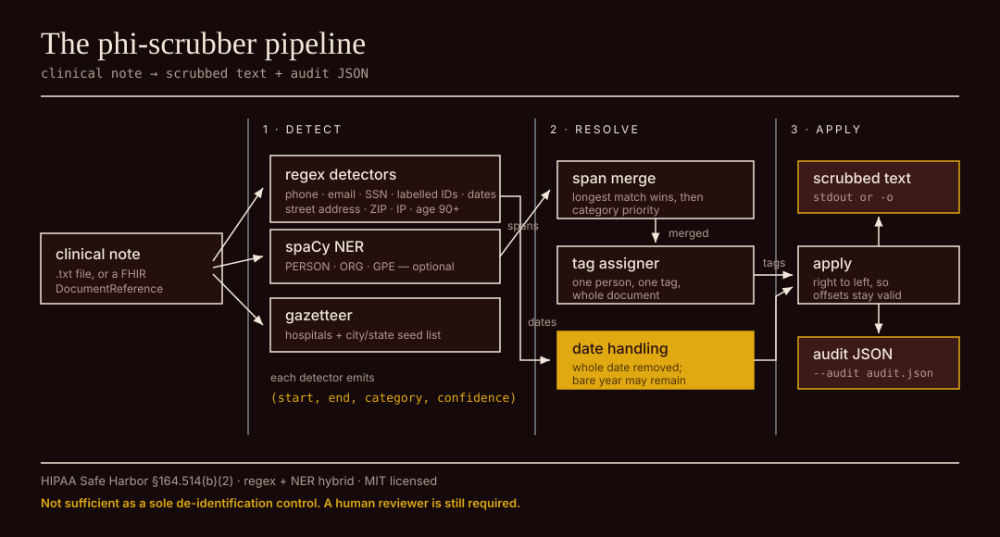
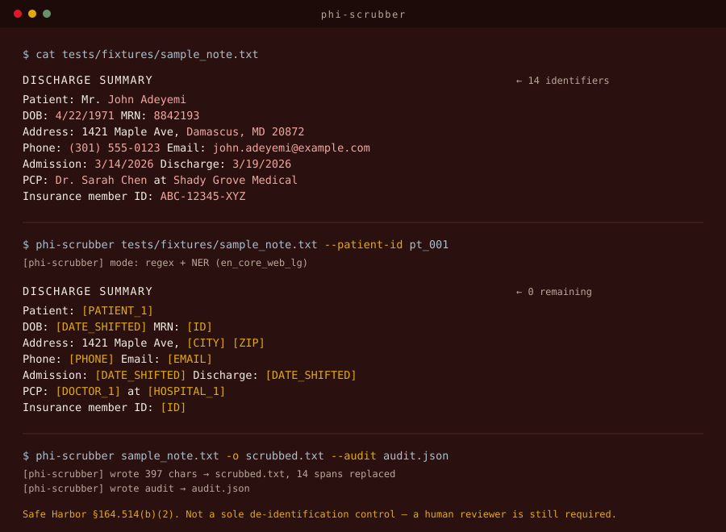

Selected work
Also built: loaner device tracker for NIH NIDDK · Synaptix, a Telegram bridge for driving a coding agent remotely · FitRows, a WooCommerce plugin that pulls Year/Make/Model fitment out of auto-parts titles · a crowdsourced study guide platform built with UMBC faculty.
Try the PHI Scrubber
PHI Scrubber is my open-source tool for de-identifying clinical notes under HIPAA Safe Harbor. Edit the sample note below and watch the identifiers get replaced as you type.
$ phi-scrubber tests/fixtures/sample_note.txt --patient-id pt_001 $ phi-scrubber tests/fixtures/sample_note.txt -o scrubbed.txt --audit audit.json [phi-scrubber] mode: regex + NER (en_core_web_lg)

detectors (regex · spaCy NER · gazetteer) → span merge → tag assigner → date shifter → scrubbed text + audit JSON
Experience
| IT Intern | mPower, Inc. at NIH NIDDK | Bethesda, MD | Jun–Sep 2026 |
| Student AI Intern | UMBC Division of IT | Baltimore, MD | Current |
| Intern | Radical AI | Remote | Earlier |
| Credentials | |||
|---|---|---|---|
| Security+ (SY0-701) | CompTIA | Certified | Feb 2026 |
| AI Fluency and Claude 101 | Anthropic Academy | Completed | Jun 2026 |
| Solutions Architect Associate | AWS | In progress | Fall 2026 |
| Education | |||
| Computer Science and Cybersecurity | UMBC | Baltimore, MD | May 2027 |

What I work in
- Python
- TypeScript
- LLM agents
- Security
- Workflow automation
- AWS
About
I study computer science and cybersecurity at UMBC, and I work there as a student AI intern building language-model tools and automation for the Division of IT. In the summer of 2026 I joined the IT team at NIH NIDDK, where I shipped an outage notification system and a help desk assistant that answers differently depending on who is asking. I earned Security+ in February 2026 and I am working toward AWS Solutions Architect. On my own time I build things that keep running without me: a futures trading system, an agent bridge, a client follow-up SaaS, an open-source PHI de-identifier. I founded and lead Revival Campus Fellowship at UMBC. U.S. citizen, clearance-eligible, graduating May 2027.
Contact
Open to new-grad roles from May 2027, in the DMV or remote.
Résumé LinkedIn GitHub Say hello